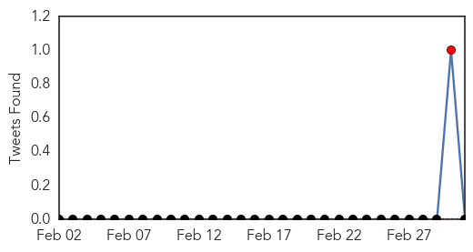
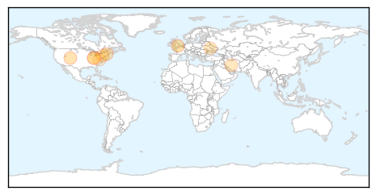
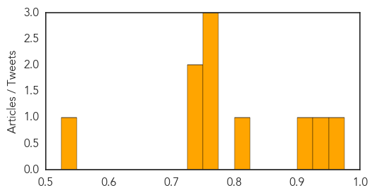

Pertussis
30-Day Web Trend
0 alerts, 0 warnings

30-Day Twitter Trend
1 alerts, 0 warnings

Article Locations

Article Confidences

Top Articles:
-
No articles found for Mar 03, 2015
Top Tweets:
-
No tweets found for Mar 03, 2015
Influenza
30-Day Web Trend
0 alerts, 0 warnings

30-Day Twitter Trend
0 alerts, 0 warnings

Article Locations
Article Confidences
Top Articles:
- 0.969
- Salem Hospital lifts visitor limitations
- 0.950
- Adults only really catch flu about twice a decade, suggests study
- 0.916
- Spanish influenza came to Glenwood Springs in 1918
- 0.820
- After flu outbreak quelled, veterans home reopening to visitors
- 0.751
- March 2, 2015 Archives
- 0.751
- March 2, 2015 Archives
- 0.751
- March 2, 2015 Archives
- 0.747
- Modern Day Cold and Flu Experience Includes 35 Billion Sick Days and Coping on Social Media, According to Vicks® Global Survey
- 0.735
- Modern Day Cold and Flu Experience Includes 35 Billion Sick Days and Coping on Social Media, According to Vicks® Global Survey
- 0.536
- Livestock show managers and exhibitors need to practice biosecurity
Top Tweets:
- 0.618
- Severity of Influenza A(H1N1) Illness and Emergence of D225G Variant, 201314 Influenza Season, Florida, USA http://t.co/ebtByHbiMb